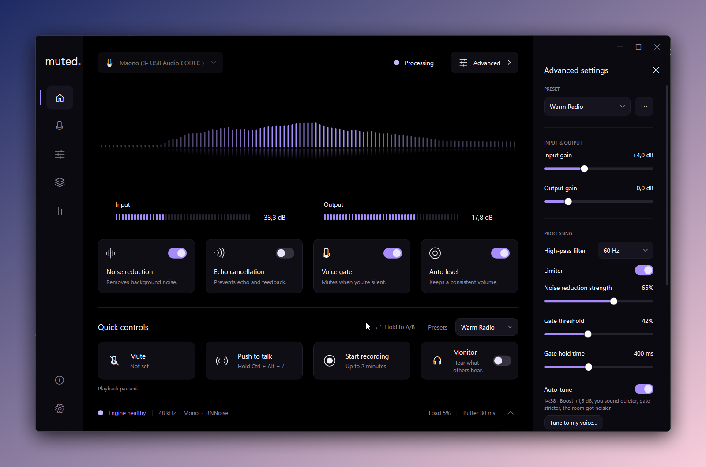

muted.
Your voice, without the fan, the hiss or the keyboard.
Muted runs your microphone through RNNoise on your own PC, before Discord, Teams or your game hears it. It can clean what you hear from others too. Free and open source, with no account and no cloud.

Any PC
No RTX card needed. RNNoise runs on the CPU and adds 20 ms.
Speakers are fine
Echo cancellation subtracts what your speakers play, so a headset is optional.
Hear the difference
Hold A/B, or save one file with your voice before and after.
Made for games
Push to talk, a mute indicator on top of your game, and profiles that switch per game.
Set up in four steps
- Install a virtual cable, like the free VB-CABLE.
- Start Muted, pick your microphone and the cable.
- Press the power button.
- In your call app, choose
CABLE Outputas the microphone.
Or with Scoop: scoop bucket add muted https://github.com/yyyutakaaa/Muted then scoop install muted/muted.